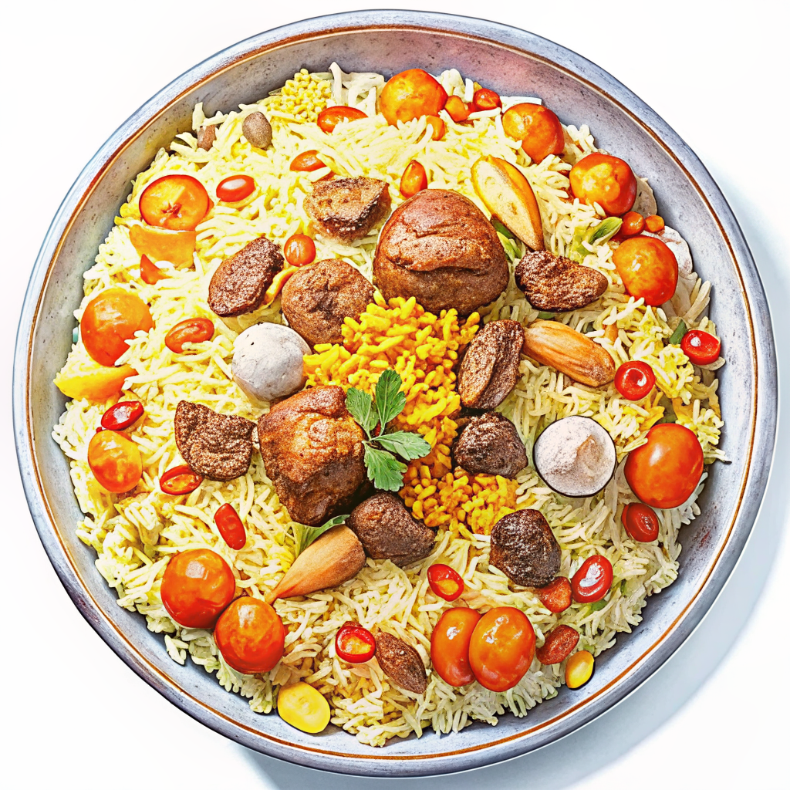

← 国一覧へ戻る
← 国一覧へ戻る
中央アジアの内陸部に位置するウズベキスタンは、かつてシルクロードの要衝として栄えた古都が点在する国。サマルカンド・ブハラ・ヒヴァのイスラム建築は今なお世界を魅了し、ユネスコ世界遺産にも登録されている。青タイルの霊廟が建ち並ぶ景観と、見知らぬ旅人を家に招くウズベク人のホスピタリティが、この国の旅を忘れがたいものにしてくれる。
ウズベキスタン国旗 ― 青はシル川・アム川の水と空、白は平和と純粋、緑は豊かな自然を表す。三日月と12の星がイスラムの象徴。

年間1〜2万人程度の日本人が訪れるまだ知名度が低めの旅先。それだけに観光地化されすぎておらず、バザールや路地を歩いていると地元の日常に自然と混ざり込める。シルクロード古都を目指す歴史好きや、写真映えする建築を求める旅行者に人気が高まっている。
夏は40℃近くになる乾燥した大陸性気候。4〜6月と9〜10月が旅行のベストシーズン。冬は氷点下になる地域も。


大陸性気候のウズベキスタンは季節の変化が激しく、夏と冬で気候がまるで違う。
色が濃いオレンジほど気温が高く、黄金色は比較的過ごしやすい月です。
✅ ベスト：4〜6月・9〜10月 ／ 冬は氷点下になることも
✅ ベスト：4月〜6月・9〜10月 ／ 冬は降雪もあり遺跡が閉鎖されることも
✅ ベスト：4〜5月・9〜10月 ／ 夏は40℃近くになる乾燥した砂漠気候
航空券・ホテル・食費・交通費の目安を一覧でチェック。
節約ポイントやお金の持ち方も紹介しています。
| ✈️ | 航空券（往復）直行便はウズベキスタン航空（成田〜タシュケント週3〜4便） 大韓航空・中国南方航空などの乗継便も利用可能 |
7〜18万円 |
| 🛏️ | ホテル（1泊）ゲストハウス：1,500〜3,500円・中級：4,000〜9,000円 サマルカンド旧市街内のブティックホテルは雰囲気◎ |
〜1万円/泊 |
| 🍜 | 食費（1日）バザールや大衆食堂なら1食200〜500円 プロフ・シャシリクなどの定番料理は安くてボリューム満点 |
500〜1,500円/日 |
| 🚕 | 交通費（1日）市内はYandex.TaxiやInDriverが便利 都市間は共有タクシー（サービ）かアフロシヨブ号（高速鉄道） |
500〜3,000円/日 |
| 📍 | 観光・アクティビティレギスタン・イチャン・カラなど有料スポットが多い 世界遺産の入場料はまとめると意外と積み上がる |
500〜2,000円/日 |
| 🌐 | SIM・Wi-Fi現地SIMはタシュケント空港で購入可能（数百円〜） Ucell・Beeline・UMS等が主要キャリア。eSIMも対応しつつある |
300〜1,000円 |
イスラム文化と旧ソ連の歴史が交差する国ならではのマナー。
モスク見学・食事・服装など旅行者が知っておくべきポイントをまとめました。
ウズベク語・ロシア語の簡単なフレーズ集。
「ラフマット（ありがとう）」一言で、相手の表情がぐっと和らぎます。
| 日本語 | ウズベク語 / 読み方 | |
|---|---|---|
| 👋 あいさつ | ||
| こんにちは | Assalomu alaykumアッサローム アライクム | |
| 元気ですか？ | Qandaysiz?カンダイシズ？ | |
| 元気です | Yaxshimanヤフシマン | |
| さようなら | Xayrハイル | |
| ありがとう | Rahmatラフマット | |
| 🙏 基本表現 | ||
| すみません | Kechirasizケチラシズ | |
| はい / いいえ | Ha / Yo'qハー / ヨック | |
| 名前は〜です | Mening ismim ～メニン イスミム ～ | |
| わかりません | Tushunmayapmanトゥシュンマヤプマン | |
| 助けてください | Yordam bering!ヨルダム ベリン！ | |
| 🍽️ レストラン・ショッピング | ||
| おいしい！ | Mazali!マザリ！ | |
| いくらですか？ | Qancha turadi?カンチャ トゥラディ？ | |
| お会計お願いします | Hisob qilingヒソブ キリング | |
| 安くして | Arzonroq bo'lsinアルゾンロック ボルシン | |
| トイレどこですか？ | Hojatxona qayerda?ホジャットホナ カイエルダ？ | |
| これください | Shuni beringシュニ ベリン | |
| 辛くしないで | Achchiq qilmangアッチック キルマン | |
| おすすめは？ | Nima tavsiya qilasiz?ニマ タフシヤ キラシズ？ | |
| 🔢 数字 | ||
| 1〜5 | Bir・Ikki・Uch・To'rt・Beshビル・イッキ・ウチ・トゥルット・ベシュ | |
| 6〜10 | Olti・Yetti・Sakkiz・To'qqiz・O'nオルティ・イェッティ・サッキズ・トッキズ・オン | |
| 100・1000 | Yuz・Mingユズ・ミン | |
旅行前にフレーズをマスターしよう！
印刷できる単語カードを販売中。
安定タイプ・冒険タイプ2種類のモデルコースを用意。
管理人の実際の旅ルートもそのまま公開しています。
各都市の名物料理から定番スイーツ・ドリンクまで。
食べてみたいものをここで探して旅の計画に加えよう。
旅のスタイルに合わせた2タイプのモデルコースを紹介。サマルカンドとブハラを軸に据えた古都連泊プランから、全都市を繋ぐシルクロード縦断まで。どちらもアレンジ自由です。
「シルクロードを端から端まで歩いてみたい」そんな気持ちで組んだのがこのルートです。フェルガナの工房でリシタン陶器職人のおじさんと片言ロシア語で話し、サマルカンドでは人で混み合う昼間を避けて早朝5時にレギスタン広場を訪れました。最後にたどり着いたアラル海の船の墓場では、錆びついた漁船が砂漠に並ぶ光景の前で言葉が出なかった。シルクロードの栄光と時代の変化、それでもここに暮らす人たちの逞しさ。そういうものを全部ひっくるめて感じられる旅ができる国だと思います。
春の花・秋の果物・砂漠の夕景。季節ごとに異なる表情があります。
日程が決まっていない人はベストシーズンから逆算するのがおすすめ。